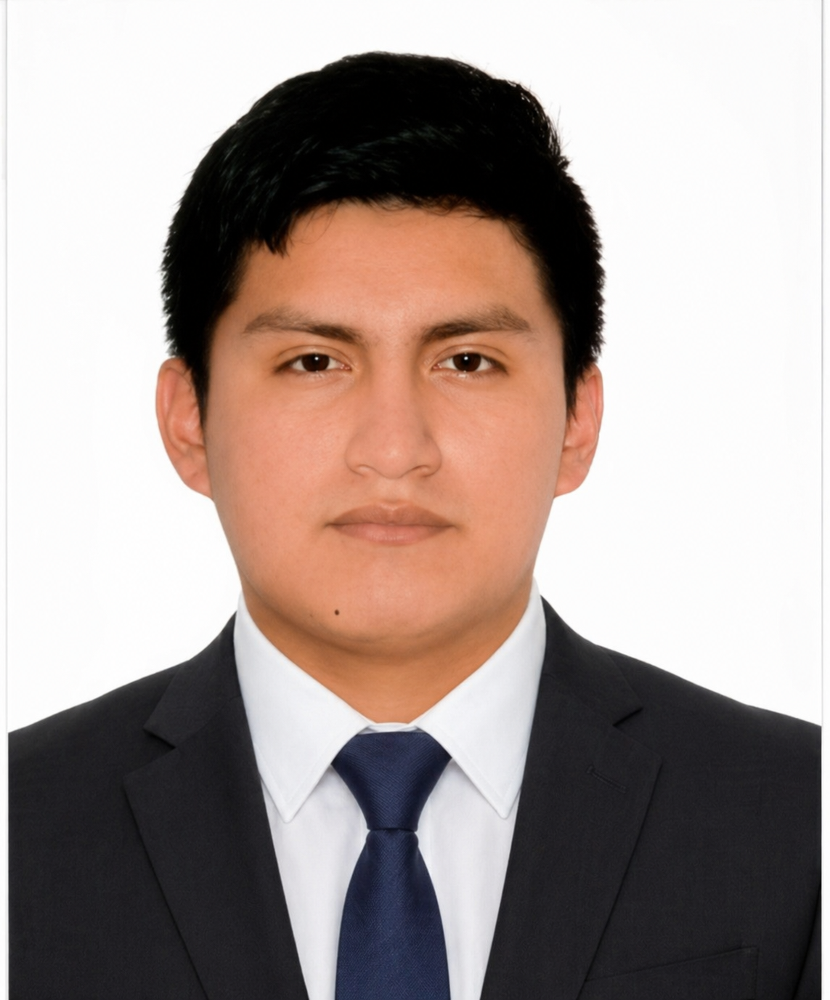

My web page
Cristian Bryan Huaman Chapoñan

Estudiante de la Universidad Nacional Mayor de San Marcos
FACULTAD: Ingeniería de Sistemas e Informática
ESCUELA: Inteligencia Artificial
Cursos del Ciclo I:
- Introducción a la Ciencia de la Computación
- Álgebra y geometría analítica
- Cálculo I
- Redacción y técnicas de comunicación efectiva
- Medio ambiente y desarrollo sostenible
- Desarrollo personal y liderazgo
- Métodos de estudio universitario
Contacto:
Correo: cristianbhuamanch@gmail.com
LinkedIn
Enlaces adicionales:
LinkedIn del profesor